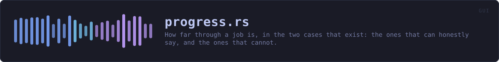

crates/veilvoice-gui/src/progress.rs
veilvoice-gui · 539 lines · read the source here · or on GitHub
How far through a job is, in the two cases that exist: the ones that can honestly say, and the ones that cannot.
Why a bar is a claim
A progress bar is read as a promise about how much longer. Drawn over a job whose length nobody knows it is a lie that gets worse the longer it is on screen: it crawls to nine tenths, sits there, and the person watching learns that this window's bars mean nothing. Roadmap item 167 says an estimate is given only where one can honestly be given, and the example it gives is the distinction this module is built on. Hashing a file of known length can say how far through it is, because the total is a number the operating system will tell you before the work starts. Deriving a key cannot: it is one long computation with no countable middle, and the honest thing is to say that rather than to draw something.
So Reach has two constructors and they are not interchangeable. Reach::counting is for a job with a total, and draws a bar. Reach::unmeasurable is for a job without one, takes the reason as an argument, and draws a spinner with that reason beside it. There is no third constructor that guesses.
Why atomics rather than a channel
crate::offthread::Answer is the shape for one value that arrives once. This is the other shape: a number that changes thousands of times while the drawing thread reads it every frame. A channel would deliver sixty thousand messages nobody wants, and a Mutex would be a lock the drawing thread waits on while a worker holds it, which is the whole class of defect roadmap item 167 exists to remove.
Relaxed is enough for all of it. Nothing here is ordered against anything else: the worst a stale read can produce is a bar one frame behind, and a bar one frame behind is what every bar is.
Where the repaint request lives
In strip, not at the call sites. A window with nothing happening in it stops drawing, so a counter that advanced would not be seen until somebody moved the mouse, which is precisely what a frozen window looks like. Left to the caller that would be one line to forget per panel, and a fix written at the wrong scope is how F-210, F-216, F-219 and F-220 each happened.
One indicator, and the reduce-motion setting
Roadmap item 169. strip is the only thing in this crate that draws "work is happening", and a test refuses a bar or a spinner anywhere else. It takes the resolved Motion rather than reading the preference itself, because the preference is resolved once per frame against the system setting and the environment override, and a second reader of it is a second answer.
Under reduced motion the indeterminate case becomes a still bar rather than a travelling one. A spinner cannot honour that setting at all, which is why there is no spinner here: ui.spinner() animates unconditionally, so twelve panels drawing one were twelve panels ignoring somebody who had said movement hurts.
In plain words
This is the little indicator that says something is happening.
Where the program knows how much work there is, it shows how far through it is. Where it does not know, it says so in a sentence instead of drawing a bar that would be making it up.
WHAT THIS FILE CONTAINS
539 lines defining 10 functions (9 public), 1 type and 2 constants. Everything below is read out of the source, so it cannot disagree with the code.
The types it owns.
struct Reachline 90 · How far through one job is.
What happens when it runs. These are the ways in: public, and nothing else in this file calls them, so they are what an outside caller reaches first.
Reach::countingline 109 · A job of total countable units.Reach::unmeasurableline 122 · A job whose length cannot be known, and the reason, which is shown.Reach::advanceline 131 · Count by more units finished.Reach::set_totalline 138 · Say what the total really is, for a job that could only count it once it had started.Reach::fractionline 160 · How far through, in 0, 1, or None where that cannot be said.
reachesdone,totalReach::becauseline 169 · The reason no estimate is given, for a job that cannot give one.stripline 190 · The indicator, beside the control that started the work.
reachesbar
WHAT CALLS WHAT
The functions this file defines, and the calls between them. An edge means the callee's name appears, called, inside the caller's body. This is a syntactic reading, not a type-resolved one.
The same graph as Mermaid source
%%{init: {"theme":"base","themeVariables":{"background":"#1a1b26","primaryColor":"#1f2335","primaryTextColor":"#c0caf5","primaryBorderColor":"#7aa2f7","secondaryColor":"#16161e","tertiaryColor":"#16161e","lineColor":"#737aa2","textColor":"#c0caf5","mainBkg":"#1f2335","nodeBorder":"#7aa2f7","clusterBkg":"#16161e","clusterBorder":"#2f3549","fontFamily":"ui-monospace, SFMono-Regular, Consolas, monospace","fontSize":"14px"}}}%%
flowchart TD
n_counting(["Reach::counting<br/>line 109"])
n_unmeasurable(["Reach::unmeasurable<br/>line 122"])
n_advance(["Reach::advance<br/>line 131"])
n_set_total(["Reach::set_total<br/>line 138"])
n_done["Reach::done<br/>line 145"]
n_total["Reach::total<br/>line 150"]
n_fraction(["Reach::fraction<br/>line 160"])
n_because(["Reach::because<br/>line 169"])
n_strip(["strip<br/>line 190"])
n_bar["bar<br/>line 244"]
n_fraction --> n_done
n_fraction --> n_total
n_strip --> n_bar
click n_counting href "https://github.com/tilas01/veilvoice/blob/main/crates/veilvoice-gui/src/progress.rs#L109" "open the source"
click n_unmeasurable href "https://github.com/tilas01/veilvoice/blob/main/crates/veilvoice-gui/src/progress.rs#L122" "open the source"
click n_advance href "https://github.com/tilas01/veilvoice/blob/main/crates/veilvoice-gui/src/progress.rs#L131" "open the source"
click n_set_total href "https://github.com/tilas01/veilvoice/blob/main/crates/veilvoice-gui/src/progress.rs#L138" "open the source"
click n_done href "https://github.com/tilas01/veilvoice/blob/main/crates/veilvoice-gui/src/progress.rs#L145" "open the source"
click n_total href "https://github.com/tilas01/veilvoice/blob/main/crates/veilvoice-gui/src/progress.rs#L150" "open the source"
click n_fraction href "https://github.com/tilas01/veilvoice/blob/main/crates/veilvoice-gui/src/progress.rs#L160" "open the source"
click n_because href "https://github.com/tilas01/veilvoice/blob/main/crates/veilvoice-gui/src/progress.rs#L169" "open the source"
click n_strip href "https://github.com/tilas01/veilvoice/blob/main/crates/veilvoice-gui/src/progress.rs#L190" "open the source"
click n_bar href "https://github.com/tilas01/veilvoice/blob/main/crates/veilvoice-gui/src/progress.rs#L244" "open the source"
classDef entry fill:#1f2335,stroke:#7aa2f7,color:#c0caf5
class n_counting,n_unmeasurable,n_advance,n_set_total,n_fraction,n_because,n_strip entry
classDef api fill:#1f2335,stroke:#7dcfff,color:#c0caf5
class n_done,n_total api
classDef helper fill:#1f2335,stroke:#bb9af7,color:#c0caf5
class n_bar helperThis site loads no third-party script, so it cannot run Mermaid; the diagram above is the same nodes and edges drawn by the generator instead. GitHub renders the source below directly.
ITEMS
| Item | Line | Documentation |
|---|---|---|
KEY_DERIVATION pub const | 82 | Why a key derivation cannot say how far through it is. |
Reach pub struct | 90 | How far through one job is. |
Reach::counting pub fn | 109 | A job of total countable units. |
Reach::unmeasurable pub fn | 122 | A job whose length cannot be known, and the reason, which is shown. |
Reach::advance pub fn | 131 | Count by more units finished. |
Reach::set_total pub fn | 138 | Say what the total really is, for a job that could only count it once it had started. |
Reach::done pub fn | 145 | Units finished so far. |
Reach::total pub fn | 150 | The whole job, or zero where there is no honest total. |
Reach::fraction pub fn | 160 | How far through, in 0, 1, or None where that cannot be said. |
Reach::because pub fn | 169 | The reason no estimate is given, for a job that cannot give one. |
strip pub fn | 190 | The indicator, beside the control that started the work. |
BAR const | 221 | How wide the bar is drawn, and how tall. |
bar fn | 244 | The bar itself: filled to a fraction, travelling, or still. |